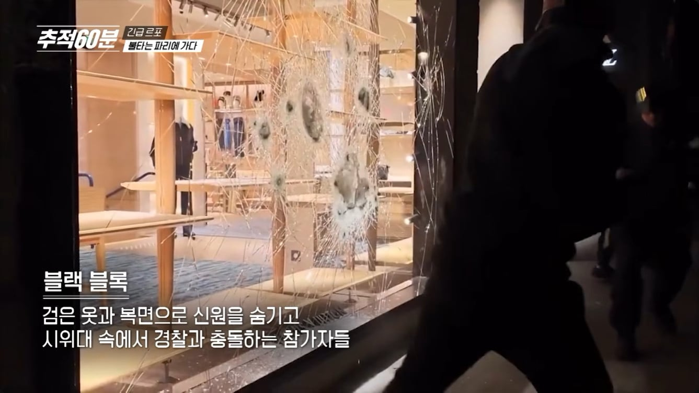
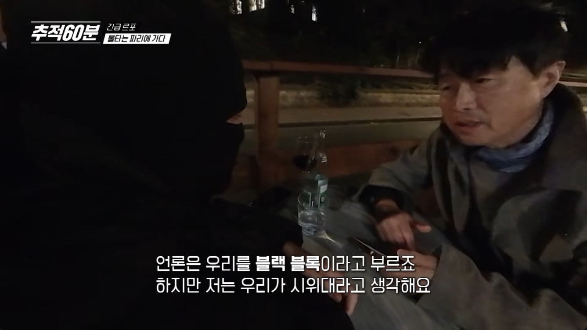
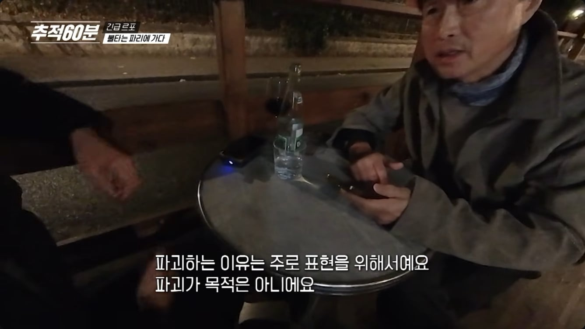
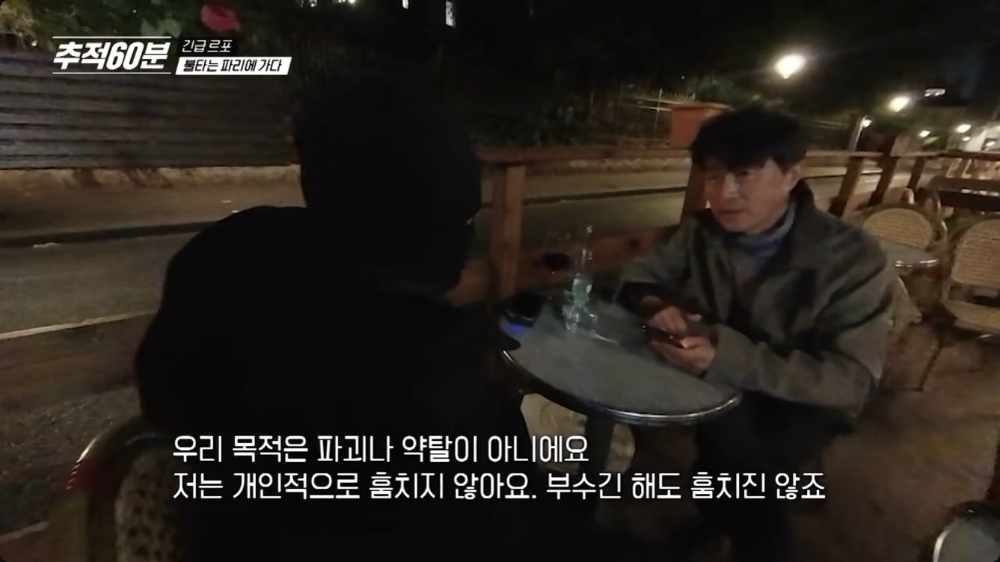
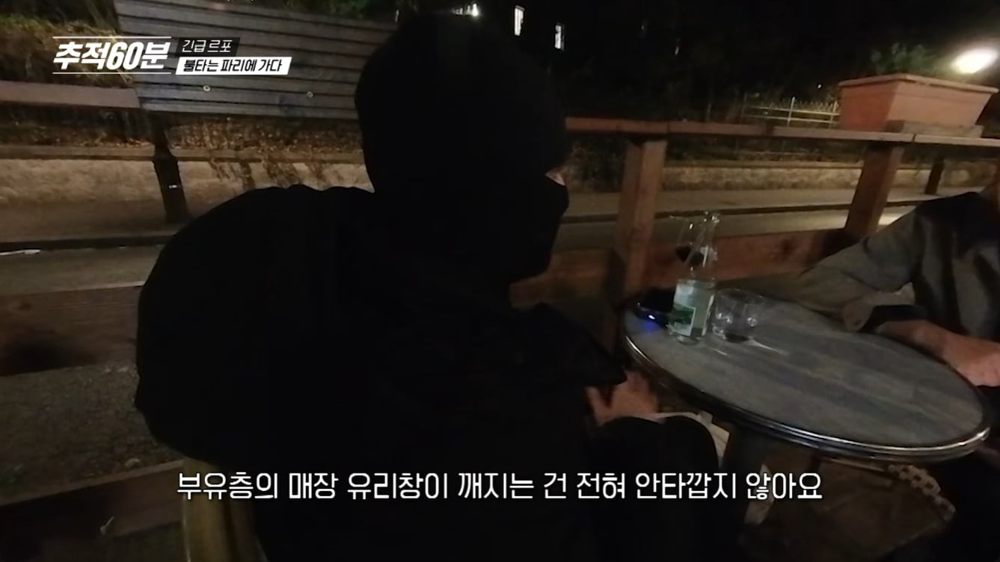
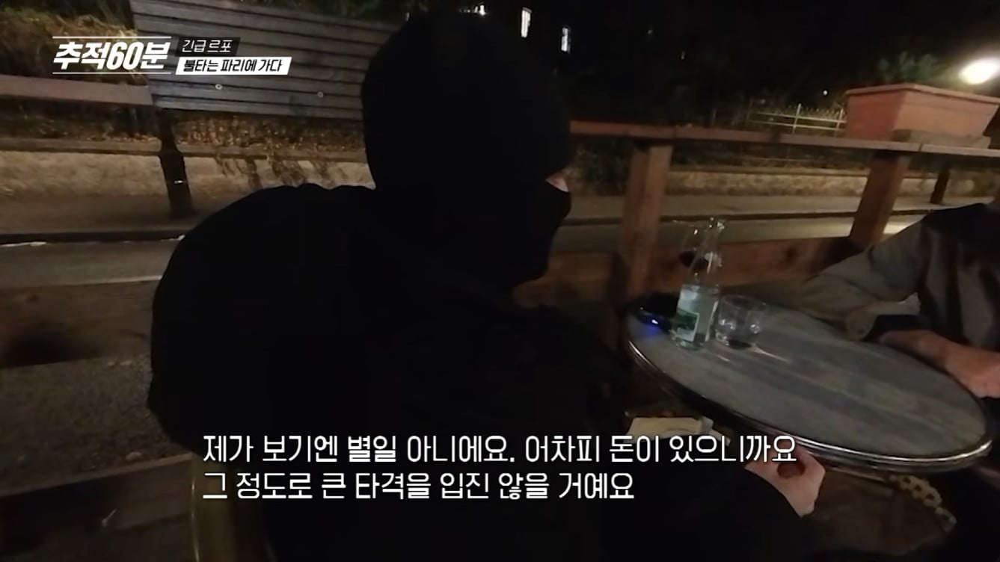
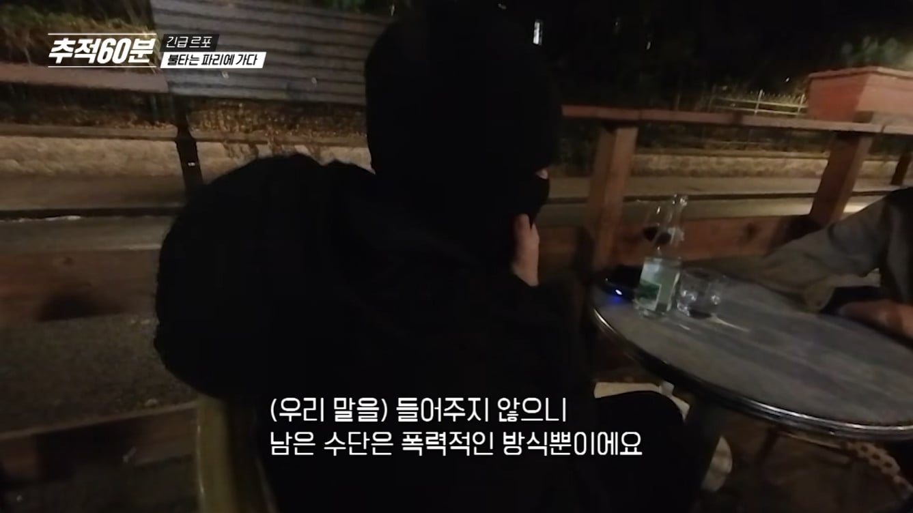
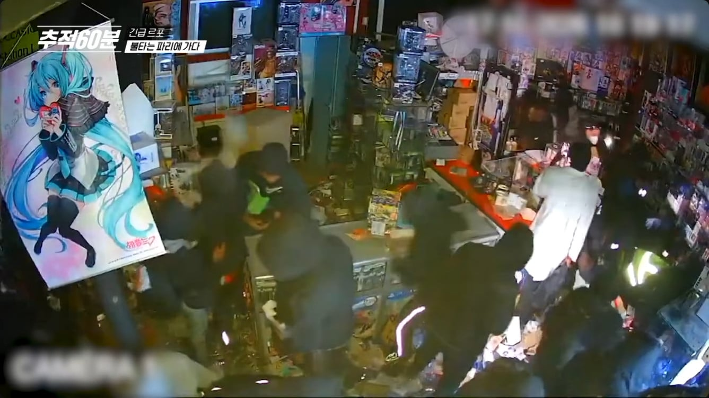

그와중에 버튜버 뭐임 ㄷㄷ
(동양인 등이 운영하는)가게 = 부유층 매장 = 약탈대상
(무슬림이 운영하는)가게 = 부유층 매장 아님 = 여기는 스킵
(자칭)혁명가의 본질
블랙스킨 ㅋㅋㅋ
블랙록슈터
그럼 상점가를 털게 아니고 기업 회장실가서 털지
그건 총맞음
당당하면 신원까라고
얼굴 숨기는 투사들이 어딨냐ㅋㅋㅋ
우리나라는 시위하면서 시위대 아닌 시민이라고 하고 저긴 폭도들이 시위대라고 하고
시위대 아닌 시민이 뭔 말임 시위대도 시민인데
보통 시위대=폭도 공식이 박힌 분들이 자기들이 시위하는걸 정당화하는 방식이 '이건 시위가 아니고 시민의 의견표출임' 이럼
물론 남들 입장에선 우린 그걸 시위라고 부르기로 합의했어요니까 병신행동이긴 하지
근데 저게 시위의 본질 아닌가
촛불 들고 트럭 보내고 그걸로 끝내는 한국 사람들이 이상한거지
wwe이긴해도 금속 노조들이 행하는 과격한 시위가 그 본질에 가장 가깝다고 생각함
금속노조 조차도 쟤네랑 비교는 좀..
그놈의 본질타령
본질은 내말 들어줘 이거고
촛불든것도 수단이고 폭력방화는 수단인거지 수단을 본질이라고 지 편하자고 바꿔먹네 님 예비 폭도임?
아님 서울서부지방법원 폭동에 참가했었음?
가게 주인이 AR들고 쏴갈겨야하는데
블랙 블록은 스스로 시위대라 생각한다네 ㅋㅋㅋ